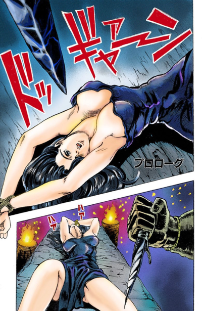
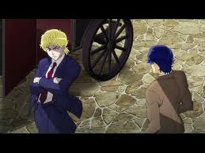
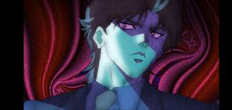
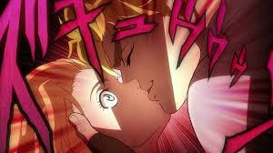
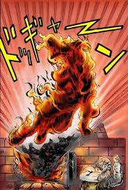

Entre os séculos XII e XVI, um chefe asteca usando uma máscara de pedra mancha sua máscara com o sangue de uma jovem mulher, como parte de um sacrifício humano de uma tribo asteca . Isso faz com que vários espinhos brotem da máscara, perfurando o crânio do homem sem causar ferimentos graves. O homem afirma ter alcançado a vida eterna, demonstrando sua habilidade de sugar o sangue de outro membro da tribo com o dedo, bem como sua força sobre-humana. É revelado que essa tribo tentou dominar o mundo, mas desapareceu por razões desconhecidas.


Em 1880, em Liverpool, Inglaterra, um jovem Jonathan Joestar (conhecido por seus amigos como JoJo) vive pacificamente na rica propriedade de seu pai, George Joestar I. Outro jovem garoto de Londres , Dio Brando , é adotado por eles devido à morte de seu pai, Dario Brando. George acreditava que ele e seu filho pequeno foram resgatados por Dario durante um acidente de diligência no qual sua esposa perdeu a vida; na realidade, Dario estava tentando saquear seus cadáveres. Jonathan tenta fazer amizade com Dio, sem saber de seu plano de quebrar seu espírito através de constantes provocações e ganhar a confiança de George para que ele possa se tornar o único herdeiro da fortuna Joestar.


Como parte de seu plano, Dio atormenta Jonathan de várias maneiras: ele dá uma joelhada no queixo de seu cachorro Danny, o espanca violentamente em uma luta de boxe e coloca todos os seus amigos contra ele, enquanto se apresenta ao pai de Jonathan como um cavalheiro e aluno melhor do que seu irmão adotivo. Quando Jonathan encontra consolo em um relacionamento com Erina Pendleton, Dio rouba seu primeiro beijo.

Essa afronta final enfurece Jonathan a ponto de ele confrontar Dio abertamente, dando-lhe forças para derrotá-lo pela primeira vez. Algumas gotas do sangue de Dio caem sobre a Máscara de Pedra, fazendo com que seus espinhos se estendam e a empurrem da parede. Apenas Dio e Jonathan testemunham a ativação da máscara; enquanto o primeiro insiste que não passa de um instrumento de tortura, o jovem Joestar eventualmente começará a pesquisar arqueologia e etnologia para descobrir a história por trás do artefato. Dio aprende com a luta que Jonathan é mais forte do que imaginava; depois de queimar Danny em um incinerador como vingança, ele decide esperar o momento certo e tentar ganhar a confiança de Jonathan.

Ao retornar para casa, ainda abalado pelos eventos recentes, Dio se vê cercado por policiais convocados por Jonathan. Em uma ousada incursão à Rua dos Ogros , Jonathan conseguiu fazer amizade com o honrado criminoso Robert EO Speedwagon e prender o comerciante chinês Wang Chan , que originalmente vendera o veneno para Dio. Embora Dio pareça estar encurralado, ele empunha a Máscara de Pedra e tenta esfaquear Jonathan. George recebe o golpe, mas seu sangue é suficiente para ativar a máscara, e Dio a veste triunfantemente antes de ser abatido pelos policiais.
JUVENTUDE COM DIO Artigo principal: Juventude com Dio (Arco da História)Com a vida de George chegando ao fim, ele pede a Jonathan que perdoe Dio e o enterre ao lado de seu pai. De repente, Dio massacra os policiais e fere Speedwagon, tendo se transformado em vampiro. Em suas tentativas de matar a criatura aparentemente invulnerável, Jonathan recorre a incendiar a Mansão Joestar , prendendo Dio lá dentro. Com grande dificuldade e impressionantes demonstrações de força, Jonathan consegue empalar o vampiro na Estátua da Deusa do Amor. Embora Speedwagon tema o pior, Jonathan sobrevive ao ser arremessado para fora de uma janela.
Algum tempo depois do incêndio, Jonathan e Erina encontram Will Anthonio Zeppeli , um barão italiano que utiliza uma energia peculiar chamada Ondulação (波紋, Hamon ) . Zeppeli explica que a Ondulação é uma técnica de artes marciais que permite ao usuário concentrar a energia corporal em outros tipos de energia, incluindo a energia solar, através da respiração adequada. Depois que Zeppeli ensina Jonathan a usar a Ondulação, os dois encontram Wang Chan, que é derrotado pela técnica Soco Zoom de Jonathan, mas consegue escapar.
Os dois usuários do Ripple, agora acompanhados por Speedwagon, pegam uma diligência pelo túnel que leva à cidade de Windknight's Lot , para onde Wang Chan fugiu, segundo informações de Speedwagon. No entanto, o grupo logo é atacado por um Jack, o Estripador, zumbificado . Zeppeli consegue ferir Jack, mas ele escapa para um labirinto subterrâneo escondido no túnel. Zeppeli diz a Jonathan para acabar com ele sem derramar uma gota de vinho. Nos túneis, Jonathan aprende a usar o Ripple em conjunto com o copo para sentir a posição do zumbi e o mata com seu Ripple Overdrive.
O grupo sai do túnel e o Lago do Cavaleiro do Vento surge à vista. De repente, um garoto chamado Poco rouba a bagagem do grupo, forçando Jonathan e Zeppeli a persegui-lo. No entanto, após ser derrubado pela Ondulação de Jonathan, Poco não se lembra de nada do seu encontro com o grupo. Tendo sido atraídos para um cemitério durante a perseguição, o grupo percebe que Dio havia hipnotizado o garoto para usá-lo como uma armadilha. Dio aparece para o grupo, quase totalmente curado de seus ferimentos, e seu exército de zumbis inicia o ataque. Zeppeli ataca Dio, mas descobre com horror que Dio desenvolveu uma técnica de congelamento para neutralizar a Ondulação. Embora Jonathan tente ajudar Zeppeli, ambos são dominados pela habilidade de Dio e arremessados para longe.
Artigo principal: Pluck for Tomorrow e o Sucessor (Arco da História)
Confiante em sua superioridade sobre os usuários da Ondulação, Dio invoca dois zumbis excepcionalmente poderosos: Bruford e Tarkus , cavaleiros lendários que desempenharam papéis fundamentais na disputa de 1565 entre Elizabeth I e Maria Stuart, Rainha da Escócia . Mantendo seu orgulho, Bruford pede a Dio que desafie Jonathan sozinho. Dio, certo de sua vitória, concorda e parte para Windknight's Lot. Com Tarkus impedindo que o grupo interfira, Bruford e Jonathan travam seu duelo. Embora Bruford enfie Jonathan debaixo d'água, Jonathan descobre que tanto a água quanto o metal da espada de Bruford, Luck, conduzem facilmente a Ondulação, e consegue ferir gravemente o cavaleiro.
Bruford tenta um último ataque, mas detém sua espada no último instante; revela-se que a Ondulação restaurou sua nobre alma humana. Após descobrir o nome de Jonathan, Bruford lhe confia sua espada, que ele renomeia para Arrancar com seu sangue, antes de sucumbir aos ferimentos e se desintegrar. Tarkus então inicia seu ataque ao grupo, forçando-os a fugir em um planador feito de folhas fundidas pela Ondulação. Enquanto o grupo foge, Zeppeli revela como aprendeu a usar a Ondulação.
Zeppeli morre para salvar JoJo Tarkus salta repentinamente em direção ao grupo, fazendo com que eles se choquem contra um castelo à beira de um penhasco, que outrora serviu como campo de treinamento para cavaleiros. A força incrível de Tarkus permite que ele não só sobreviva à queda, como também escale a parede em direção ao grupo. Jonathan entra nas ruínas para encontrar um lugar seguro para Poco se esconder, mas se vê preso por uma coleira em volta do pescoço quando a porta se fecha. Tarkus reconhece a Câmara do Dragão de Duas Cabeças e coloca uma coleira em si mesmo para enfrentar Jonathan em um Combate Mortal com Correntes no Pescoço.
Jonathan não consegue respirar direito por causa da coleira, o que o impede de usar o Ripple. Enquanto isso, Poco se lembra dos avisos de sua irmã sobre o medo e encontra coragem para entrar sorrateiramente no quarto e abrir a porta por dentro, permitindo a entrada de Zeppeli e Speedwagon. Zeppeli, lembrando-se da profecia de Tonpetty sobre sua morte, se sacrifica para salvar Jonathan e transferir toda a sua energia vital para ele. Fortalecido pela energia de Zeppeli, Jonathan quebra a coleira e derrota Tarkus. Depois, o grupo se despede de Zeppeli, que falece em paz.
A BATALHA SANGRENTA
OS TRÊS DE UMA TERRA DISTANTE
Artigo principal: Os Três de uma Terra Distante (Arco da História)
O grupo finalmente chega ao Lote do Cavaleiro do Vento. Um homem chamado Adams aborda Poco por estar acordado tão tarde, apenas para revelar ser um zumbi quando o grupo lhe vira as costas. Jonathan derrota Adams, mas é imediatamente atacado por um homem chamado Dire e sua técnica Ataque Dividido do Trovão. Depois que Jonathan lhe dá uma cabeçada, Dire cessa o ataque e revela que foi convocado por uma carta de Zeppeli, junto com seu mestre Tonpetty e seu discípulo Straizo . O grupo entra no castelo de Dio, onde Jonathan resgata a irmã de Poco do zumbi cobra Doobie antes de confrontar Dio diretamente. Dire se adianta, reivindicando seu direito de vingar Zeppeli antes de Jonathan, por conhecê-lo há muito mais tempo. Dire ataca Dio com sua técnica especial, Ataque Dividido Cruzado do Trovão, mas a técnica de congelamento de Dio estilhaça seu corpo antes que ele possa acertá-lo. Aterrissando em uma tigela de rosas, a cabeça de Dire consegue disparar uma rosa infundida com Ondulação no olho de Dio antes de se estilhaçar completamente. Dio entra em fúria, convocando sua horda de zumbis para atacar o grupo. Quatro zumbis cercam Poco e sua irmã, mas são derrotados por Straizo.
A batalha entre Dio e Jonathan começa. Jonathan atira uma chuva de rosas em Dio, move-se para o seu ponto cego e corta a cabeça de Dio com a espada de Bruford, agora chamada Sorte e Coragem. No entanto, Dio revela que congelou a espada, prendendo os braços e as pernas de Jonathan. Dio começa a injetar sua essência zumbi na artéria carótida de Jonathan, mas Jonathan consegue se descongelar com as chamas ao redor e ejeta a essência zumbi de sua corrente sanguínea. Ao incendiar a própria mão, Jonathan consegue acertar Dio em cheio, preenchendo seu corpo com a Ondulação. Dio é arremessado de uma sacada; embora dispare um fluido de alta pressão pelos olhos como último recurso, ele parece ser desintegrado pela Ondulação de Jonathan. Jonathan e o grupo eliminam os zumbis restantes de Dio e destroem a Máscara de Pedra na manhã seguinte, tendo salvado a cidade com sucesso; o grupo permanece alheio ao fato de que Dio conseguiu arrancar a própria cabeça antes que a Ondulação a atingisse e que escapou junto com Wang Chan.
Três meses após os eventos de Windknight's Lot, Jonathan se casa com Erina. Os amigos de Jonathan se despedem do casal enquanto embarcam em um navio rumo à América para sua lua de mel. Mas, no meio da viagem, Jonathan avista Wang Chan. Depois de avisar Erina para se esconder em seu quarto, Jonathan persegue Wang Chan até a sala de máquinas, onde é revelado que a cabeça de Dio embarcou secretamente no navio dentro de um caixão especial à prova de explosões . Dio revela a Jonathan que planeja matá-lo e anexar sua própria cabeça ao corpo de Jonathan antes de chegar à América. Dio dispara novamente o ataque de fluido ocular, perfurando o pescoço de Jonathan e o deixando sem ar. Erina chega e testemunha o estado ferido de Jonathan, mas uma horda de zumbis aparece atrás dela. Embora Dio ordene que Wang Chan corte a cabeça de Jonathan, Jonathan usa o último resquício de sua Ripple para destruir a própria cabeça de Wang Chan, fazendo com que seu corpo trave o eixo da hélice do navio e provoque uma explosão.
Jonathan, ainda mais ferido por estilhaços do motor, implora a Erina que salve um bebê órfão e fuja, apesar de sua própria vontade de ficar com ele. Dio envolve o pescoço de Jonathan com seus tentáculos, mas Jonathan usa os estilhaços para cortar os tentáculos e apunhalá-lo. Jonathan segura a cabeça de Dio em seus braços, refletindo sobre seus destinos entrelaçados. Dio oferece a Jonathan a vida eterna com Erina, apenas para descobrir que Jonathan já morreu devido aos ferimentos. Enquanto Erina se esconde dentro do caixão de Dio, a nave explode com os dois homens dentro.
Erina reflete sobre a vida que Jonathan Joestar viveu. Embora a história jamais conheça os feitos heroicos de Jonathan, Erina decide que seus descendentes, incluindo o filho que carrega no ventre, ouvirão falar da vida que ele viveu. Dois dias depois, Erina é resgatada perto das Ilhas Canárias, encerrando a história da vida de Jonathan, mas dando início a uma nova era de aventuras.